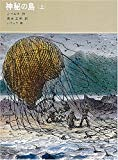
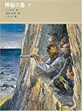
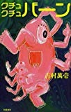
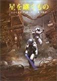
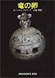
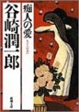
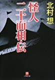
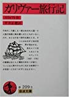
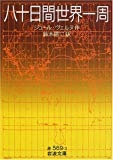

FAVORITES
小説
もうひとつの夏へ 飛火野 耀
飛火野耀というグーグルで引いても9040件しかヒットしないマイナーな小説家の作品が好きだ。彼はわずか九冊の本を出した後、もう十年以上も世から姿を消している。噂では編集者はおろか、家族でさえ行方は分からないそうだ。
作品の中で本人がだいたいいつも登場していて、「これはSFではない。僕の身に本当にあったことです。」と書いてあるので、
たぶん今は異世界を旅していて、そのうち帰ってきたら、また体験談を書いてくれるだろう。
最近気づいたことだが、彼の文体は村上春樹に似ている。登場人物の名前のパターンも似ている。
このことから僕は 飛火野耀＝村上春樹のSF用変名と勝手に思っている。
とはいえ、僕は飛火野氏の方が村上春樹より好きなのだが。
そんな飛火野氏の最高傑作が「もうひとつの夏へ」。ジュブナイルであり、パラレルワールド旅行記であり、サイバーパンクな作品。素晴らしい。

posted with amazlet at 09.10.27
飛火野 耀
角川書店
売り上げランキング: 610228
おすすめ度の平均:


生まれてきた事に意味なんてないんだけどさ

posted with amazlet at 09.10.27
飛火野 耀
角川書店
売り上げランキング: 607114
おすすめ度の平均:


ちょっぴり切ないラスト。
神秘の島 ジュール・ヴェルヌ
孤島に漂流した五人の男の冒険紀。科学の力で様々な難問題を解決していく。まさに科学の勝利。
漂流記は数多かれど、製鉄所まで作っちゃた人たちは少ないだろう。
漂流記の最高傑作。あと、海底二万リーグが好きな人も。

posted with amazlet at 09.10.27
ジュール ヴェルヌ
福音館書店
売り上げランキング: 53566
おすすめ度の平均:


おもしろすぎる!

魅力的な男たちの漂流記

輝く神秘！

冒険にあこがれる人に

posted with amazlet at 09.10.27
ジュール ヴェルヌ
福音館書店
売り上げランキング: 54088
おすすめ度の平均:

「十五少年漂流記」が好きな人はぜひ読んでみて下さい
クチュクチュバーン 吉村萬壱
世界が何の意味もなく変容し崩壊する様を描く。クチュクチュバーンと。吐き気を催す名作。

posted with amazlet at 09.10.27
吉村 萬壱
文藝春秋
売り上げランキング: 426326
おすすめ度の平均:
トラウマになる

すごい

こういうのは好きです

……

筒井康隆、安部公房、大友克洋、各氏の作品が好きな方にお勧め。
星を継ぐもの ジェイムズ・P・ホーガン
月面調査員が真紅の宇宙服をまとった人間の死体を発見した。検査の結果この死体は何と死後五万年を経過していることがわかった。
先史時代からそこにあった死体と現世人類との関係は？
この謎を現実的な設定に基づき解決していく、至上最大スケールのミステリー小説。
紛糾する議論の中、一つまた一つ謎が解明されていくプロセスはとても知的興奮を感じる。

posted with amazlet at 09.10.27
ジェイムズ・P・ホーガン
東京創元社
売り上げランキング: 1741
おすすめ度の平均:


30年経っても刺激的で面白い

感動を新たに

もはやハードＳＦの古典。知的な論理思考が愉しめる、推理小説ファンも納得の出来。

ホントにいい作品はジャンルが無意味になりますね、

SF好きで未読なら読む価値あり
竜の卵 ロバート L.フォワード
表面重力670億Ｇ、地表温度8000度の中性子星上の知的生命と人類のファーストコンタクトもの。
この本のテーマはずばり「タイムスケールが違う文明間のコンタクト」である。
核力をベースにして生きる彼らは我々より100万倍タイムスケールが違い、彼らの世代交代にかかる時間はわずか十五分。
彼らは圧倒的な速度で地球文明の知識を吸収しそして追い抜かしていく。
（いかにして彼らに知識を伝えたかのアイデアが秀逸）
読者は中性子星人の個人に対してではなく種に愛情を感じるという奇妙な体験をするであろう。
ちなみに作者の本業は重力波の研究者。

posted with amazlet at 09.10.27
ロバート L.フォワード
早川書房
売り上げランキング: 43021
おすすめ度の平均:


すごいの一言！！

名作です

特別な本・特別な時間

ＳＦで歴史の流れを感じられるとは…

サイエンスとイマジネーションの融合
痴人の愛 谷崎潤一郎
特に解説するもない必要もないだろう。
日本の近代小説はたいてい辛気くさく、
ちょっと頭を使えば解決できるようなことをうじうじ悩んでいる人たちがいっぱいで嫌いだけど、
こんな素晴らしい小説もある。
あと非常に読みやすい。

posted with amazlet at 09.10.27
谷崎 潤一郎
新潮社
売り上げランキング: 5817
おすすめ度の平均:


読みやすい

精神的な性世界

譲治は、実はサディスト

人生を狂わせるほどの愛

大好き
怪人二十面相・伝 北村想
江戸川乱歩の少年探偵団シリーズの二次創作。最近、K−２０が映画化されて復刊した。映画の原作とは違うので注意。
この小説は怪人二十面相が主人公であり、江戸川乱歩の小説で描かれた事件を裏側から見る形になる。
子供時代に少年探偵団に夢中になった大人達に薦めたい。

posted with amazlet at 09.10.27
北村 想
小学館
売り上げランキング: 224103
おすすめ度の平均:


「運命の悪戯か、それとも縁というやつか。いや、いやいや、これは宿命だね」
肩ひじ張らずに読める作品でした。

作品の批評とは

名作でしょうこれは！
posted with amazlet at 09.10.27
北村 想
小学館
売り上げランキング: 229991
おすすめ度の平均:


後を引き継いだ平吉・怪人二十面相と二代目・明智小五郎の対決を描いた第二幕！！

正直、映画の原作本ではありません（要注意）
アーサー王宮廷のヤンキー
僕の中での最も面白い小説。１９世紀の技術者がアーサー王の時代にタイムスリップし、実権を握り、科学と理性の力で国を変えていく話。
主人公が実権を握って最初にしたことが、「特許制度を作ること、なぜなら特許のない国は蟹と同じで横に進むか後ろに進むかしかないから。」ってのが印象に残っている。宗教や貴族制度に関する辛辣な風刺も面白い。
posted with amazlet at 09.10.27
マーク・トウェイン
早川書房
売り上げランキング: 291333
おすすめ度の平均:


面白すぎ☆
ガリヴァー旅行記
僕の二番目に好きな小説。児童書のガリヴァー旅行記は子供向けに毒を抜かれた別作品だと思っていい。
小人国では人間の小賢しさ、大人国では人間の身体的醜さが描き出され、ラピュータでは大学が批判され、最後の馬の国ではついに人間は馬以下の存在と見なされる。
人類に対する呪詛のような小説。

posted with amazlet at 09.10.27
スウィフト
岩波書店
売り上げランキング: 39004
おすすめ度の平均:

架空の国から人間社会を逆照射

相対的視点の真骨頂

ホントは深い。

皮肉を交えた鋭い指摘

子供の頃と大人になってから、二度読むと
八十日間世界一周 ジュール ヴェルヌ
ときは十九世紀、八十日で世界を一周できるかという賭けにフォッグ氏が挑む。
百年前に書かれた小説なので、今読むと時間旅行も兼ねてできてお得。
冒険小説の傑作中の傑作。

posted with amazlet at 09.10.27
ジュール ヴェルヌ
岩波書店
売り上げランキング: 52253
おすすめ度の平均:


これも傑作だな。

フォッグ氏最高！！！

お金を使わずに世界一周

いまさらだけど・・

19世紀末の娯楽大作、バーチャル旅行活劇